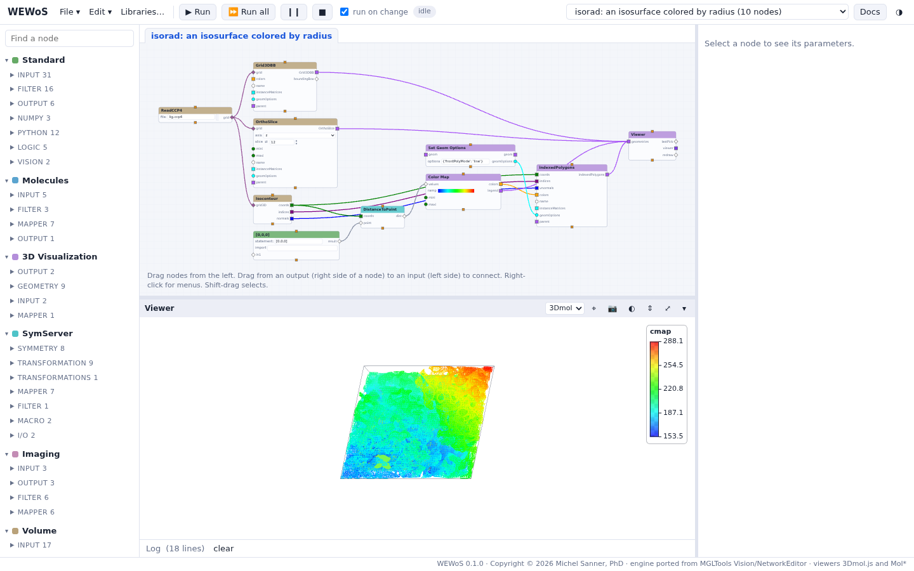
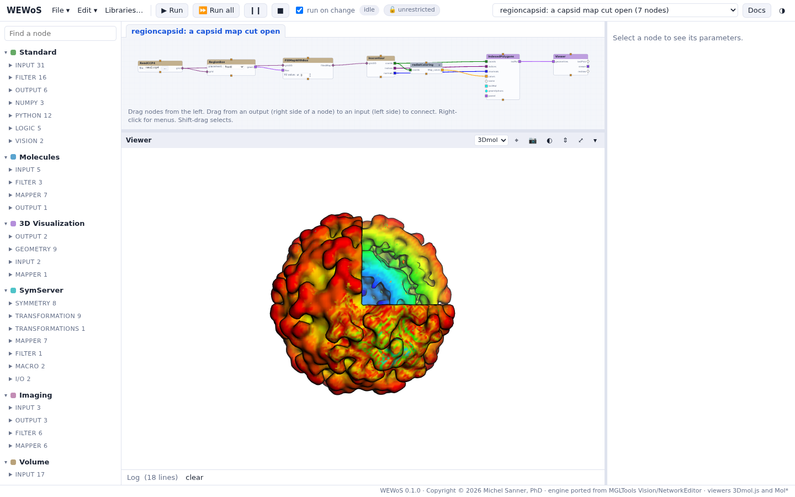
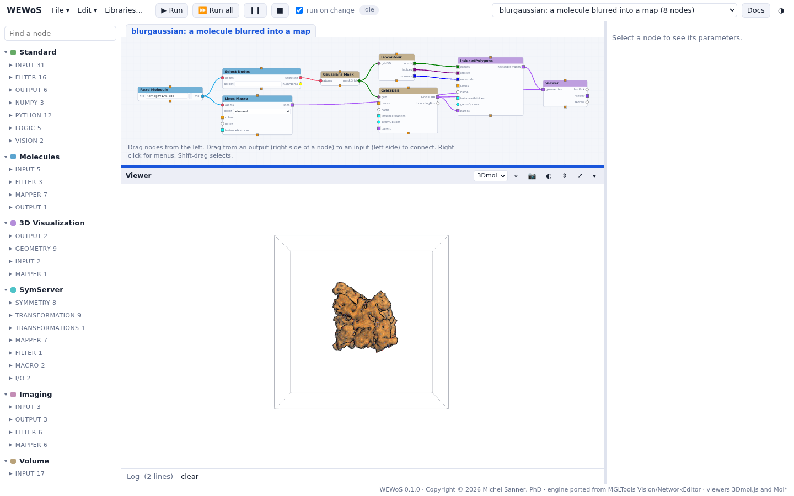

Volumes: isosurfaces and slices
Four networks of the Volume library: a CT scan cut by three slices, a map colored by radius, a capsid map cut open, and a molecule blurred into a map.
These are the tutorial's more Vision networks. Each opens from the group Vision tutorial; press Run all. They use the Volume library, a Python 3 port of MGLTools' Volume package: map readers, the UT isocontouring code, slices, boxes and masks.
A CT scan: isosurface and slices

ct_head.rawiv, a CT scan of a head, read by
ReadAnyMap. UT-Isocontour makes the isosurface at the value 65.5, drawn by
IndPolygons; three OrthoSlice nodes cut the volume along x, y and z and
color the values; Grid3DBB draws the box of the grid.- Select UT-Isocontour and change its isovalue: the surface moves between the skin and the bone.
- Select an OrthoSlice and move its slice number to scan through the head.
An isosurface colored by radius

lig.ccp4 read by ReadCCP4. The isosurface's vertices go
to DistanceToPoint (SymServer), which gives their distance to the point that an eval
node gives, [0,0,0]; Color Map turns the distances into colors, and its legend
gives the range. Set Geom Options draws the surface as lines
({'frontPolyMode': 'line'}).Coloring a surface by its distance to the center is how the depth of a virus capsid's surface is shown: the same idea in the next network.
A capsid map cut open

nwv2.ccp4, the density of a virus capsid.
RegionBox places a box on one octant of the map (FrontI), and FillMapWithBox
fills it with 0, so the isosurface opens there and shows the inside of the shell. The macro
radialColoring holds DistanceToPoint, the point (0,0,0) and a Color Map.- Select RegionBox and choose another placement: an octant (FrontI to BackIV) or a half.
- Double-click radialColoring to open the macro, and change the color map of its Color Map node.
A molecule blurred into a map

nomegav1AS.pdb (17,189 atoms) read by Read Molecule.
Gaussians Mask puts a Gaussian on each atom of the selection into a grid (3 Å per
voxel, 3 Å resolution): a low-resolution map of the molecule. Isocontour makes its
surface, translucent over the molecule's lines; Grid3DBB draws the grid's box.- Lower the isovalue to see the surface grow; change the resolution of Gaussians Mask for a smoother or a more detailed map.
- Type a selection in Select Nodes (for example
chain A) to blur only part of the molecule.
Not ported: Vision's Volume library also rendered volumes directly (UTVolRen)
and simplified meshes (QSlim); neither is in WEWoS. Slices and isosurfaces are drawn as meshes.